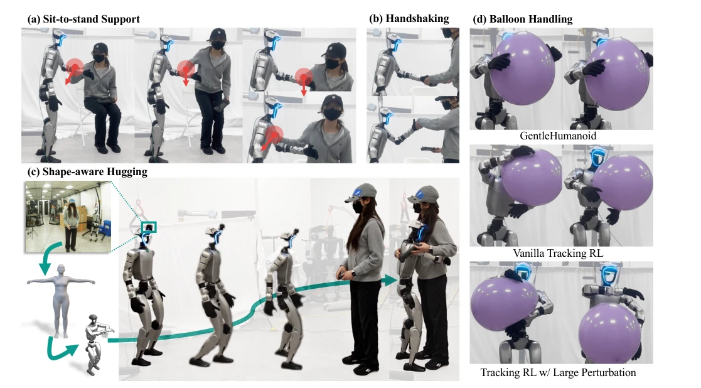
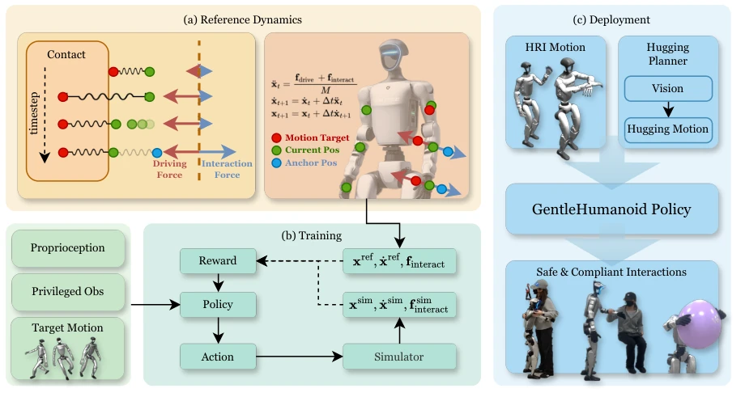
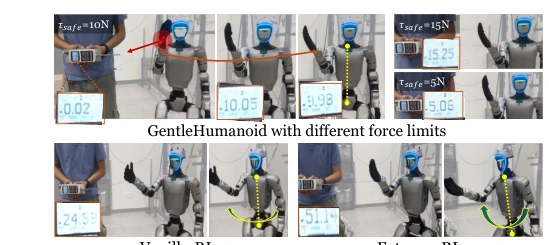
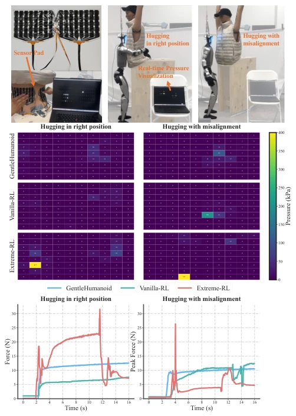

This paper adds a touch of gentleness to rigid humanoid robots. The core of GentleHumanoid is embedding impedance control into a whole-body motion tracking strategy, allowing the upper body to yield to external forces. Although it sounds promising, essentially it relies on virtual springs in simulation to simulate contact, and force control accuracy on real hardware still depends on luck. Baseline comparisons are quite harsh; ordinary RL fights back rigidly upon contact, while this method at least goes with the flow like a human. However, relying on human motion data sampling to generate guiding forces, if encountering unseen interaction poses, this gentleness might turn rigid. Additionally, although real-robot experiments demonstrated balloon manipulation, force sensors rely on external equipment, and closed-loop force control still has room for improvement. Overall, it's a decent HRI attempt, but don't expect it to fully replace tactile sensors; it's more about kinematic compliance.
For humanoid robots to enter human environments, safe and natural physical interaction is a necessity. However, existing RL strategies mostly emphasize rigid tracking, treating external forces as disturbances to be suppressed [1]–[8]. Although some works have introduced impedance or admittance control [9]–[11], they are typically limited to the base or end-effector, and focus on resisting extreme forces rather than supporting compliant interaction [12]. Tasks like hugging or assisting standing up require coordination of multiple links such as shoulders, elbows, and hands; existing methods struggle to coordinate multi-link force responses [15]–[17]. Additionally, real interaction data is difficult to collect, and contact forces generated by simulators are often noisy and uncoordinated [10]. Therefore, a framework is needed that can uniformly model resisting and guiding contact, while ensuring kinematic consistency. Existing methods often ignore the complexity of multi-link coupling in human interaction, leading to unnatural force transmission.

Fig. 1: GentleHumanoid learns a universal whole-body control policy with upper-body compliance and tunable force limits. It enables: (a) sit-to-stand assistance, where the robot provides support across multiple links (hand, elbow, and shoulder); (b) handshaking with a 5 N force limit, allowing the robot’s hand to move naturally with the human’s; (c) autonomous shape-aware hugging, where the robot adapts its posture to the partner’s body shape (estimated from camera input) for a comfortable embrace; and (d) balloon handling, showing safe object manipulation where baselines fail.
The overall framework is based on impedance reference tracking. First, reference dynamics are defined, combining driving forces and interaction forces to generate reference poses. The core innovation lies in interaction force modeling: uniformly using spring formulas, distinguishing resist contact (anchor fixed at initial contact point) and guide contact (anchor sampled from human motion data). The latter ensures kinematic consistency of forces across multi-links, avoiding independent action. For safety, a force threshold mechanism is introduced, with tau_safe randomly sampled during training and adjustable during deployment. The RL strategy adopts a Teacher-Student architecture; the Student uses only deployable observations (proprioception, target motion, force thresholds, etc.), while the Teacher uses privileged information (reference states, interaction forces). The reward function includes reference dynamics tracking, force tracking, and unsafe force penalties. Data originates from retargeted actions from datasets such as AMASS. Dynamic sampling of force thresholds is also introduced during training, forcing the policy to adapt to different safety levels.

Fig. 2: Overview framework. (a) Reference dynamics: impedance-based dynamics integrate driving forces (for motion tracking) and interaction forces (for compliant contact), producing reference link (on the shoulders, elbows and hands) positions and velocities. (b) Training: the policy receives proprioception, privileged observations, and target motions, and is optimized using rewards that compare simulated states (xsim, ˙xsim) to reference dynamics (xref, ˙xref). (c) Deployment: the trained GentleHumanoid policy is applied to real-world tasks, including vision-based autonomous hugging and other human–robot interaction scenarios, enabling safe and compliant behaviors such as hugging, sit-to-stand assistance, and handling large deformable objects.
Evaluated on simulation and Unitree G1 real hardware. Comparing Vanilla-RL (no disturbance) and Extreme-RL (end-effector force disturbance). In simulation, external pull is simulated to test hugging; on real hardware, static force, hugging a dummy (including misalignment), and balloon manipulation are tested. Metrics include peak contact force, pressure distribution, and task success rate. Results show GentleHumanoid has more stable force values across links (hand ~10N, baseline >20N), and can safely handle balloons. Pressure pad tests indicate its contact pressure is moderate, while the baseline tends to produce local high pressure. Ablation studies find that force threshold adjustability directly affects compliance. In real hardware tests, even with dummy misalignment, this method maintains uniform pressure distribution, whereas the baseline exhibits local high pressure points.

Fig. 5: Comparison of interaction forces across policies. Top: GentleHumanoid with tunable force limits, which maintains safe interaction by keeping contact forces within specified thresholds across different postures. Bottom: baseline meth- ods, Vanilla-RL and Extreme-RL, exhibit less consistent compliance, with higher peak forces or oscillatory responses. Force gauge readings (N) are highlighted for clarity.

Fig. 6: Evaluation of hugging interactions with and without misalignment. Top: experimental setup with custom pressure- sensing pads and real-time pressure visualization. Middle: pressure maps of peak force frames for different controllers under correct hugging alignment (left) and misalignment (right). GentleHumanoid maintains moderate contact pres- sures, while baselines produce localized high-pressure peaks, especially under Vanilla-RL. Bottom: Force profiles over time, where GentleHumanoid maintains bounded and stable forces, while baselines exhibit increasing or unstable peaks.